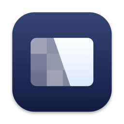
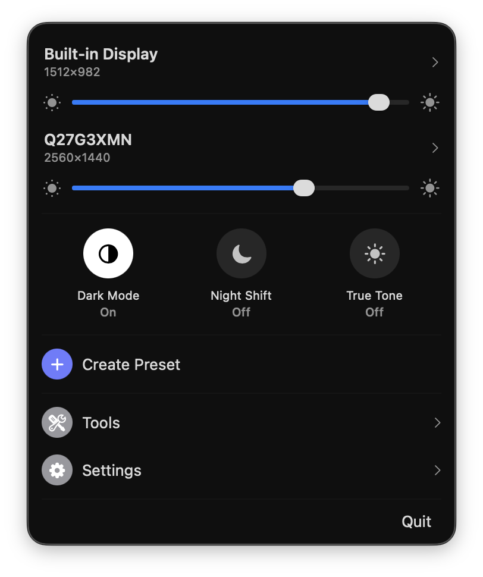

Crisp
Every display control macOS hides, in one menu bar panel.
$ brew install --cask didriksg/tap/crisp
click to copy
Features
HiDPI on any display
Retina-style scaled resolutions on external monitors, with automatic setup for 2K+ displays.
Brightness everywhere
Hardware DDC control with software fallback, and brightness keys routed to the display under your cursor.
Presets
Save whole display setups, resolution, brightness, arrangement, and apply them in one click.
Arrangement
Drag-to-arrange canvas and one-click main display switching.
Native toggles
Flip macOS Dark Mode, Night Shift, and True Tone right from the panel, no System Settings trip.
Color
ICC profile switching plus gamma, contrast, and gain adjustment.
Virtual displays
Create HiDPI virtual screens for streaming, sidecar setups, or headless Macs.
Extras
Combined brightness slider, auto brightness sync, notch hiding, launch at login.
The panel
